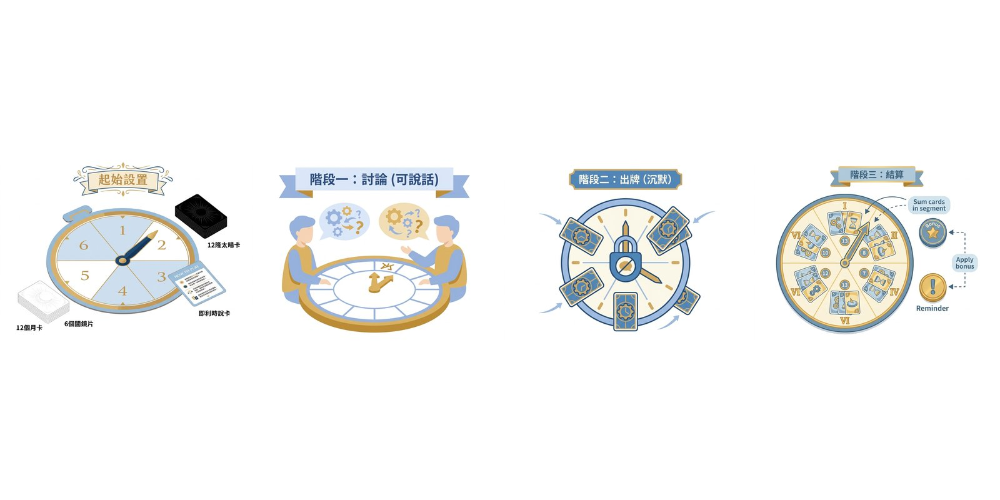

你哋一齊解謎, 但討論完之後出牌嘅時候唔可以講嘢。要靠默契去估計隊友手上有咩牌, 會放喺邊個位置。贏嘅時候大家一齊嗌, 輸嘅時候大家都好想話「我明明擺咗呢個數字㗎嘛!」。
為咩好玩: 🤫 合作默契桌遊, 情侶 / 家庭 / 朋友首選
你哋一齊解謎, 但討論完之後出牌嘅時候唔可以講嘢。要靠默契去估計隊友手上有咩牌, 會放喺邊個位置。贏嘅時候大家一齊嗌, 輸嘅時候大家都好想話「我明明擺咗呢個數字㗎嘛!」。
為咩好玩: 🤫 合作默契桌遊, 情侶 / 家庭 / 朋友首選
⚡ 快速上手 — 2 分鐘上手: 新手 2 分鐘內上手, 記住呢 6 條:

一句話總覽: 合作解謎, 時鐘圖版, 共 40 關 10 章。限制討論後沉默出牌, 考驗默契。合作向, 輸咗都唔挫敗。
沉默出牌嘅合作默契
掌握時刻 (Take Time) 係 2023 年 Libellud (Dixit 嘅同一間出版社) 出嘅合作解謎遊戲, 設計師係 Wolfgang Warsch (大名鼎鼎嘅 The Mind / The Crew 設計師), 旺角多間店有英文版, 中文版偶爾出現。遊戲背景係時鐘圖版, 共 40 關 10 章, 玩家扮演時光旅人合作通過時空考驗。
掌握時刻 嘅核心機制係「限制討論後沉默出牌」: 玩家有一個討論階段可以傾計, 之後進入沉默出牌階段, 大家唔出聲, 同時間秘密出牌。呢個設計考驗玩家之間嘅默契, 唔係靠語言而係靠「共識」, 同一般合作遊戲 (如 Hanabi) 嘅 design philosophy 唔同。
呢個 桌遊 適合 2-4 人, 最佳 2-3 人, 教學時間 15 分鐘, 一局 30-60 分鐘, 難度簡單至中等。旺角家庭 / 情侶向, 合作輸咗都唔挫敗, 非常友善。
揀 1 關 (Start 关) 開始。將時鐘圖版放喺中央, 上面有「時間格」(1-12 點, 圍繞時鐘面)。每個玩家攞一塊自己顏色嘅時光旅人板, 加 4 個時光 標記 (標記 顏色對應玩家顏色)。每個玩家攞 5 張牌 (Start 关), 牌面係 0-12 嘅數字, 代表「時間」。
每個玩家睇自己嘅手牌 (唔可以俾其他人睇), 然後大家自由討論: 「我覺得呢一關要出邊啲數字先?」討論時間冇限時, 但建議 5 分鐘內達成共識。重要: 唔可以直接講「我手上有一張 7」, 要用抽象語言表達, 例如「我有張大嘅」或者「我有兩張 0-3 嘅細數字」。
討論完進入「沉默」階段, 大家唔出聲, 同時間秘密揀一張牌面朝下放喺自己時光旅人板上。呢個階段唔可以再傾計, 唔可以改變主意, 揀咗就鎖死。
💡 例子 例: 4 人玩 Start 关 (12 張牌, 6 個時間格), 用「大 / 中 / 細」形容。討論: 「我手上 2 細 1 中 1 大」, 隊友就會知道你最少有 1 張「細」(1-4), 自己出牌範圍就由呢度推。高手默契: 「我擺大」, 隊友會自動避開大格, 集中擺細。
所有人揭開自己嘅牌, 將牌放喺時鐘圖版對應時間格上 (即係牌寫 7 就放喺 7 點位置)。每關有「過關條件」, 通常係: (a) 特定數字放喺特定位置, (b) 全部玩家嘅牌由細到大排好, (c) 兩個相鄰數字差 1, 等等。如果達成條件, 過關, 攞 1 個 獎勵 標記 (之後解鎖特殊能力)。如果唔達到, 可以 skip 或者重試 (見 和局處理)。
過咗關, 每個玩家攞 1 個時光 標記 (時間格標記), 用喺下一關。Bonus 標記 可以喺下一關用 1 次「開牌」能力 (即揭開 1 個玩家嘅 1 張牌, 唔可以選擇性開, 要全開嗰隻手牌嘅 1 張)。
揀下一關 (通常順序, 但可以揀難度相近嘅關先解鎖)。每個玩家補牌到 5 張 (Start 关) 或 6 張 (後續關)。重複 步驟 2-5。
每關有 1 張「特殊規則卡」, 喺過關條件之上加新限制, 例如: 「時間格必須逆時針排」或者「唔可以用兩個相同數字」。特殊規則卡令每關都有新變化, 40 關唔會悶。
每 4 關為 1 章, 完成 1 章解鎖新嘅時光能力 (例如「將 1 張牌換成另一張」, 1 章用 1 次)。最終章 (Chapter 10) 係終極考驗, 通常要 30 分鐘討論同出牌。
掌握時刻 嘅 和局處理 比較特別, 因為係合作遊戲:
來源: BGG comment 確認, 官方規則書 (Libellud 2023) page 8 寫「Skip and Remorse Token」段落。你可以上 BGG: https://boardgamegeek.com/boardgame/369129/拿-time
掌握時刻 喺旺角嘅定位係「合作解謎, 家庭情侶向, 輸咗都唔挫敗」。
旺角情侶 / 家庭 / 新手, 問「唔想互打, 想合作」, 掌握時刻 係首選 (但要 4 人以下)。
唔可以, 呢個係 Take Time 嘅核心。出牌階段要沉默, 靠默契同抽象語言溝通。
每關有指定數量, 建議喺最關鍵 1-2 個區段用, 唔好慳住。
因為大數字冇分配好。建議由細數字開始, 將大數字放最後一段, 留 buffer 俾中間段。
可以但體驗弱, 合作默契感覺唔到。建議 3-4 人。
唔會, 因為可以 skip 關卡, 唔似其他合作桌遊一定要贏。
新手可以一併推薦:
新手 5 分鐘掌握:
有問題、想分享戰術、或者搵遊戲partner？DM 我哋 Instagram:
📷 Instagram DM →
之後會加 Giscus 留言系統 (GitHub Discussions-based, 實時 + email 通知)